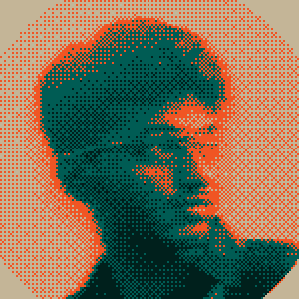
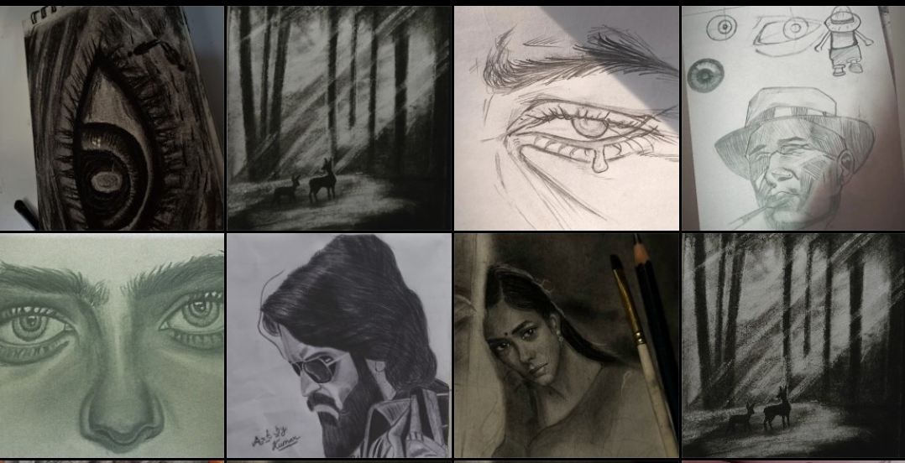
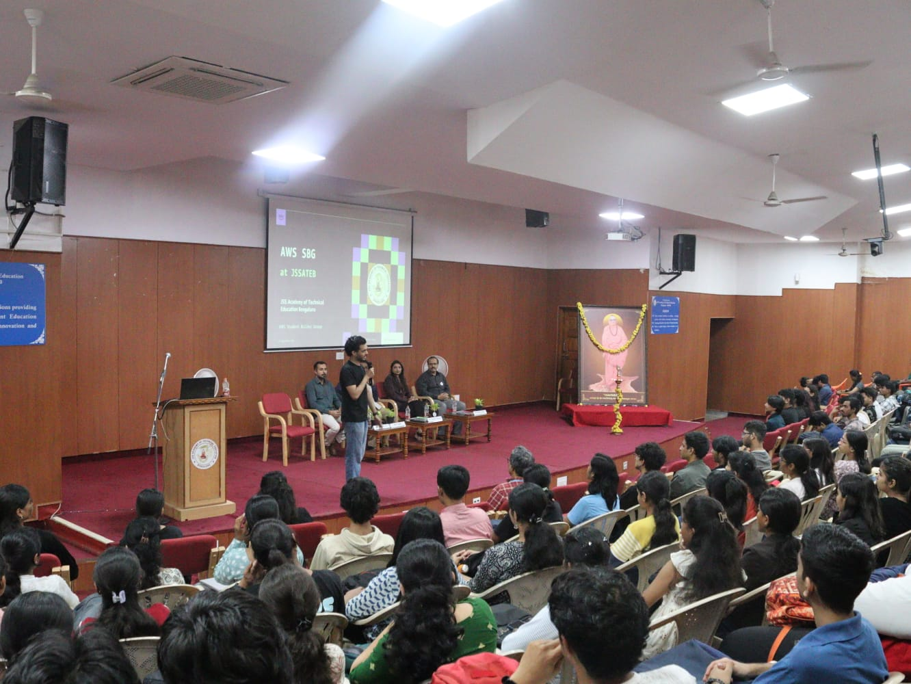
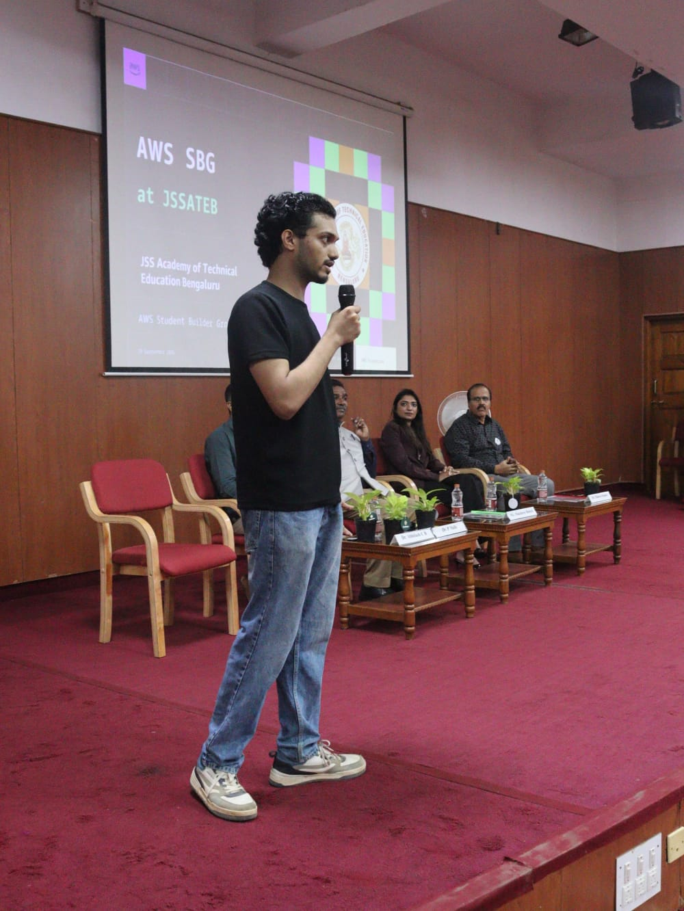

Campus Lead
AWS Student Builder Center
May 2026 — Present
Final-year engineering student · AWS Student Builder Center Campus Lead

AI Engineer & Researcher
I build and study language models, with a focus on low-resource Indic languages and world models.
AWS Student Builder Center
May 2026 — Present
Indian Institute of Science · Bengaluru
Aug 2025 — Jan 2026
Scroll to explore


